X11 decomposition
X11 is the decomposition part of X13-ARIMA seasonal adjustment algorithm originally developed by the US Census Bureau. It is a non parametric algorithm based on moving averages.
The genuine X11 algorithm was meant to decompose monthly (\(p=12\)) and quarterly series (\(p=4\)). In JDemetra+ half-yearly data (\(p=2\)), quadri-monthly (\(p=3\)) and bi-monthly data (\(p=6\)) can also be handled. (\(p=3\) and \(p=6\) only in version 3.x)
In the following chapter, explanations and examples are based on monthly and quarterly data, but the principles can be extended to other supra-monthly frequencies.
In recent years, X11 implementation in JDemetra+ v 3.x has been extended to infra-monthly data (weekly, daily, hourly…). Handling this kind of data gave way to a tailored X11 algorithm whose peculiarities are described in this chapter.
In this chapter
This chapter provides details on - algorithm steps - computation stages and detailed output series - quality measures - filter length choices - extreme values correction
The practical implementation as well as all the options, using the graphical user interface or R packages are described in this chapter
Moving averages in X11
Moving averages (MA) are the building blocks of X11. They will be used successively to accomplish three goals:
- removing seasonality
- extracting seasonality
- estimating Trend on non seasonal seriesThe type of MA used for each of these tasks and the computation steps are described in the sections below.
Definitions
A moving average of order \(p+f+1\) and coefficients \((\theta_i)\) is the operator \(M\) defined as: \[ MX_t = \sum_{i=-p}^{f}\theta_i X_{t+i} \]
The series value in \(t\) is replaced by a weighted average of \(p\) past values, the current value and the \(f\) future values. If \(p=f\), the moving average is centered and if \(\theta_{-i} = \theta_i\), it is symmetrical.
Example of simple moving average of order 3:
\[ MX_t = \frac{1}{3}(X_{t-1}+X_{t}+ X_{t+1}) \]
A moving average is a linear operator, \(M(X_t+Y_t) = M(X_t)+M(Y_t)\).
Combined moving averages
Centred and symmetrical moving averages preserve linear trends, which is a desirable propriety. They cannot have an even order, thus for even orders they are obtained by combining simple moving averages as arithmetic means of p moving averages of the same order (ie. length): \(M_{p\times order}\)
Combination example for order 12:
There are two intuitive ways to create a Moving Average of order 12:
\[ M1X_t = \frac{1}{12}(X_{t-6}+X_{t-5}+ X_{t-4}+ X_{t-3}+ X_{t-2}+ X_{t-1} \] \[ + X_{t}+ X_{t+1}+ X_{t+2}+ X_{t+3}+ X_{t+4}+X_{t+5}) \] The other being: \[ M2X_t = \frac{1}{12}(X_{t-5}+ X_{t-4}+ X_{t-3}+ X_{t-2}+ X_{t-1}+ X_{t} \] \[ + X_{t+1}+ X_{t+2}+ X_{t+3}+ X_{t+4}+X_{t+5}+X_{t+6}) \]
A centred and symmetrical MA with an even order (here 12) can be created:
\[ M_{2\times 12}= \frac{1}{2}(M1X_t+M2X_t) \] which is:
\[ M_{2\times 12} =\frac{1}{24}(X_{t-6}) +\frac{1}{12}(X_{t-5}+ X_{t-4} \] \[ +X_{t-3}+ X_{t-2}+ X_{t-1}+ X_{t}+X_{t+1}+ X_{t+2} \] \[ + X_{t+3}+ X_{t+4}+X_{t+5})+\frac{1}{24}(X_{t+6}) \]
Supressing locally constant seasonality
Applying a moving average of an order equal to the periodicity of the raw series removes a locally stable seasonality (\(\sum_{i=1}^{12}S_{t+i} = 0\))
A moving average of order, 12 will remove a locally stable monthly seasonality: \(M_{1\times 12}(S)=0\) and also \(M_{2\times 12}(S)=0\) with linear trend preservation.
X11 algorithm steps
The X11 decomposition algorithm has eight main steps, outlined below for a monthly time series. (For a quarterly time series a \(2\times 4\) moving average would be used, instead of \(2\times 12\))
Step 1: Estimation of the trend-cycle with a \(2\times 12\) MA \[ TC_t^{(1)}=M_{2\times 12}(X_t) \]
Step 2: Estimation of the seasonal+irregular component \[ (S_t+I_t)^{(1)}= X_t - TC_t^{(1)} \]
Step 3: Estimation of the seasonal component by applying a \(3\times 3\) MA to each month \[ S_t^{(1)}= M_{3\times 3}\left[(S_t+I_t)^{(1)}\right] \text{ and normalisation } Snorm_t^{(1)}=S_t^{(1)} - M_{2\times 12}\left(S_t^{(1)}\right) \]
Step 4: First estimation of the seasonally adjusted series \[ Xsa_t^{(1)}= (TC_t+I_t)^{(1)} = X_t-Snorm_t^{(1)} \]
Step 5: Refined estimation of the trend-cycle with a Henderson filter, which yields a better approximation fo trends than \(2\times 12\) MA, but cannot be applied on a seasonal series \[ TC_t^{(2)}=H_{13}(Xsa_t^{(1)}) \] Step 6: Refined estimation of the seasonal+irregular part \[ (S_t+I_t)^{(2)}= X_t - TC_t^{(2)} \]
Step 7: Refined estimation of the seasonal component by applying a \(3\times 5\) MA (generally) to each month/quarter \[ S_t^{(2)}= M_{3\times 5}\left[(S_t+I_t)^{(2)}\right] \text{ and normalisation } Snorm_t^{(2)}=S_t^{(2)} - M_{2\times 12}\left(S_t^{(2)}\right) \]
Step 8: Final estimation of the seasonally adjusted series \[ Xsa_t^{(2)}= X_t - Snorm_t^{(2)} \]
Processing stages and output
To evaluate the different components of a series, while taking into account the possible presence of extreme observations, X11 will proceed iteratively: - estimation of components - search for disruptive effects in the irregular component - estimation of components over a corrected series - search for disruptive effects in the irregular component - …
The steps described above will be run six times, at least.
The algorithm is split into
four processing stages called A, B, C and D
two diagnostics parts: E tables and Quality Measures (Summary and Detailed )
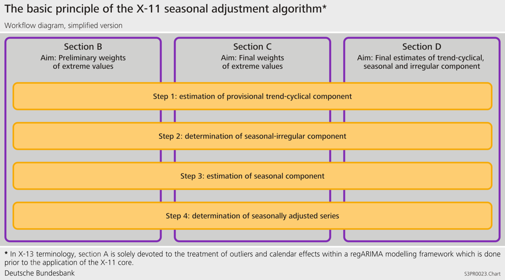
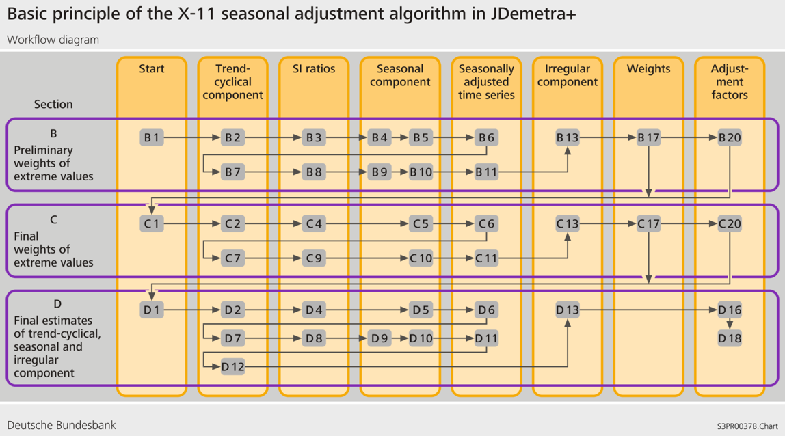
Stage A: Pre-adjustment
If a pre-treatment is performed using X-13-Arima algorithm is A step is not used, results in A table appearing in JDemetra+ output are a copy of pre-treatment results.
Detailed series produced at the end of stage A, including estimated effect from the Reg-Arima part
(to be checked: v2 vs v3 display, in GUI and R, here info based on v2)
Table A1: Original raw series;
Table A1a: Forecast of Original Series;
Table A2: Leap year effect;
Table A6: Trading Day effect (1 or 6 variables);
Table A7: The Easter effect;
Table A8: Total Outlier Effect;
Table A8i: Additive outlier effect;
Table A8t: Level shift effect;
Table A8s: Transitory effect;
Table A9: Effect of user-defined regression variables assigned to the seasonally adjusted series or for which the component has not been defined;
Table 9sa: Effect of user-defined regression variables assigned to the seasonally adjusted series;
Table9u: Effect of user-defined regression variables for which the component has not been defined.
Stage B: First automatic correction of the series
This stage consists of a first estimation and down-weighting of extreme observations. This stage is performed by applying twice the algorithm steps outlined above. It starts with the linearised or raw series copied in table B1 lead to table B20, containing adjustment values for extreme observations. B1 corrected with weights from B20 allows to compute the series C1 which will start the next stage.
Detailed series produced at the end of stage B:
Table B1: Original series after adjustment by the Reg-ARIMA model;
Table B2: Unmodified Trend (preliminary estimation using composite moving average);
Table B3: Unmodified Seasonal: Irregular Component (preliminary estimation);
Table B4: Replacement Values for Extreme SI Values;
Table B5: Seasonal Component;
Table B6: Seasonally Adjusted Series;
Table B7: Trend (estimation using Henderson moving average);
Table B8: Unmodified Seasonal: Irregular Component;
Table B9: Replacement Values for Extreme SI Values;
Table B10: Seasonal Component;
Table B11: Seasonally Adjusted Series;
Table B13: Irregular Component;
Table B17: Preliminary Weights for the Irregular;
Table B20: Adjustment Values for the original series B1, allow to compute C1.
(Up coming here: computation steps from B1 to B20)
Stage C: Second automatic correction of the series**
Following the same steps as Stage B, this stage leads to table C20, which allows to compute the final “cleaned up” series shown in D1.
Detailed series produced at the end of stage C:
Table C1: Modified Raw Series;
Table C2: Trend (preliminary estimation using composite moving average);
Table C4: Modified Seasonal: Irregular Component;
Table C5: Seasonal Component;
Table C6: Seasonally Adjusted Series;
Table C7: Trend (estimation using Henderson moving average);
Table C9: Seasonal: Irregular Component;
Table C10: Seasonal Component;
Table C11: Seasonally Adjusted Series;
Table C13: Irregular Component;
Table C20: Adjustment Values for the original series B1, allow to compute D1.
(To be checked: C20 weights will be applied to B1 not C1)
(Up coming here: computation steps from C1 to C20)
Stage D: Final decomposition and seasonal adjustment
In this part, all algorithm steps are applied one last time, finally leading to the computation of the final components
Detailed series produced at the end of stage D:
Table D1: Modified Raw Series;
Table D2: Trend (preliminary estimation using composite moving average);
Table D4: Modified Seasonal: Irregular Component;
Table D5: Seasonal Component;
Table D6: Seasonally Adjusted Series;
Table D7: Trend (estimation using Henderson moving average);
Table D8: Unmodified Seasonal: Irregular Component;
Table D9: Replacement Values for Extreme SI Values;
Table D10: Final Seasonal Factors;
Table D10A: Forecast of Final Seasonal Factors;
Table D11: Final Seasonally Adjusted Series;
Table D11A: Forecast of Final Seasonally Adjusted Series;
Table D12: Final Trend (estimation using Henderson moving average);
Table D12A: Forecast of Final Trend Component;
Table D13: Final Irregular Component;
Table D16: Seasonal and Calendar Effects;
Table D16A: Forecast of Seasonal and Calendar Component;
Table D18: Combined Calendar Effects Factors.
All final components include pre-adjustment effects stemming from outliers or regressors used in the pre-treatment step. (to be checked: v2 vs v3,here info based on v2)
D10 doesn’t contain calendar effects which are added in D16.
(Up coming here: computation steps from D1 to D20)
Stage E: Components modified for large extreme values
In this part, additional series will are computed and used in the Quality Measures part
Detailed series produced at the end of stage E:
Table E1: Raw Series Modified for Large Extreme Values
Table E2: SA Series Modified for Large Extreme Values
Table E3: Final Irregular Component Adjusted for Large Extreme Values
Table E11: Robust Estimation of the Final SA Series
(Up coming here: computation steps for E Tables)
Quality Measures
All the diagnostics below can be displayed in the GUI by expanding the NODES
Decomposition(X11) > Quality Measures > Summary
Decomposition(X11) > Quality Measures > Details
M-statisctics
M statistics are specific quality measures (ref: Lothian and Mory (1979))
\(0<M_x<3\), acceptance region \(M_x \leq 1\)
11 statistics of the decomposition quality (M1 to M11) and 2 summary indicators (Q et Q-M2)
Detailed description:
\(M1\) measures the contribution of the irregular component to the total variance. When it is above 1 some changes in outlier correction should be considered.
\(M2\), which is a very similar to \(M1\), is calculated on the basis of the contribution of the irregular component to the stationary portion of the variance. When it is above 1, some changes in an outlier correction should be considered.
\(M3\) compares the irregular to the trend taken from a preliminary estimate of the seasonally adjusted series. If this ratio is too large, it is difficult to separate the two components from each other. When it is above 1 some changes in outlier correction should be considered.
\(M4\) tests the randomness of the irregular component. A value above 1 denotes a correlation in the irregular component. In such case a shorter seasonal moving average filter should be considered.
\(M5\) is used to compare the significance of changes in the trend with that in the irregular. When it is above 1 some changes in outlier correction should be considered.
\(M6\) checks the \(\text{SI}\) (seasonal: irregular components ratio). If annual changes in the irregular component are too small in relation to the annual changes in the seasonal component, the \(3 \times 5\) seasonal filter used for the estimation of the seasonal component is not flexible enough to follow the seasonal movement. In such case a longer seasonal moving average filter should be considered. It should be stressed that \(M6\) is calculated only if the \(3 \times 5\) filter has been applied in the model.
\(M7\) is the combined test for the presence of an identifiable seasonality. The test compares the relative contribution of stable and moving seasonality[^m-X11-decomposition-2].
\(M8\) to \(M11\) measure if the movements due to the short-term quasi-random variations and movements due to the long-term changes are not changing too much over the years. If the changes are too strong then the seasonal factors could be erroneous. In such case a correction for a seasonal break or the change of the seasonal filter should be considered.
The \(Q\) statistic is a composite indicator calculated from the \(M\) statistics.
\[ \small Q = \frac{10M1 + 11M2 + 10M3 + 8M4 + 11M5 + 10M6 + 18M7 + 7M8 + 7M9 + 4M10 + 4M11}{100} \]
\(Q = Q - M2\) (also called \(Q2\)) is the \(Q\) statistic for which the \(M2\) statistics was excluded from the formula, i.e.:
\[ \small Q - M2 = \frac{10M1 + 10M3 + 8M4 + 11M5 + 10M6 + 18M7 + 7M8 + 7M9 + 4M10 + 4M11}{89} \]
If a time series does not cover at least 6 years, the \(M8\), \(M9\), \(M10\) and \(M11\) statistics cannot be calculated. In this case the \(Q\) statistic is computed as:
\[ \small Q = \frac{14M1 + 15M2 + 10M3 + 8M4 + 11M5 + 10M6 + 32M7}{100} \]
Detailed Quality measures
Average percent change (or Average differences) without regard to sign over the indicated span
The first table presents the average percent change without regard to sign of the percent changes (multiplicative model) or average differences (additive model) over several periods (from 1 to 12 for a monthly series, from 1 to 4 for a quarterly series) for the following series:
\(O\): Original series (Table A1);
\(\text{CI}\): Final seasonally adjusted series (Table D11);
\(I\): Final irregular component (Table D13);
\(C\): Final trend (Table D12);
\(S\): Final seasonal factors (Table D10);
\(P\): Preliminary adjustment coefficients, i.e. regressors estimated by the Reg-Arima model (Table A2);
\(TD\& H\): Final calendar component (Tables A6 and A7);
\(\text{Mod.O}\): Original series adjusted for extreme values (Table E1);
\(\text{Mod.CI}\): Final seasonally adjusted series corrected for extreme values (Table E2);
\(\text{Mod.I}\): Final irregular component adjusted for extreme values (Table E3).
In the case of an additive decomposition, for each component the average absolute changes over several periods are calculated as:
\[ \text{Component}_{d} = \frac{1}{n - d}\sum_{t = d + 1}^{n}|Table_{t} - Table_{t - d}| \]
where:
\(d\): time lag in periods (from a monthly time series \(d\) varies from to 4 or from 1 to 12);
\(n\): total number of observations per period;
\(\text{Component}\): the name of the component;
\(\text{Table}\): the name of the table that corresponds to the component.
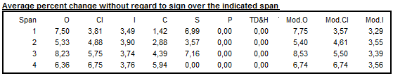
For the multiplicative decomposition the following formula is used:
\[ \text{Component}_{d} = \frac{1}{n - d}\sum_{t = d+1}^{n}{|\frac{\text{Tabl}e_{t}}{\text{Table}_{t - d}} - 1|} \] .
Relative contribution to the variance of the differences in the components of the original series
Relative contributions of the different components to the differences (additive model) or percent changes (multiplicative model) in the original series is displayed express the relative importance of the changes in each component. Assuming that the components are independent, the following relation is valid:
\[ O_{d}^{2} \approx C_{d}^{2} + S_{d}^{2} + I_{d}^{2} + P_{d}^{2} + {TD\& H}_{d}^{2} \]
In order to simplify the analysis, the approximation can be replaced by the following equation:
\[ O_{d}^{*2} = C_{d}^{2} + S_{d}^{2} + I_{d}^{2} + P_{d}^{2} + {TD\& H}_{d}^{2} \]
The column \(\text{Total}\) denotes total changes in the raw time series.
Data presented in Table F2B indicate the relative contribution of each component to the percent changes (differences) in the original series over each span, and are calculated as:
\(\frac{I_{d}^{2}}{O_{d}^{*2}}\), \(\frac{C_{d}^{2}}{O_{d}^{*2}}\), \(\frac{S_{d}^{2}}{O_{d}^{*2}}\), \(\frac{P_{d}^{2}}{O_{d}^{*2}}\) and \(\frac{TD\& H_{d}^{2}}{O_{d}^{*2}}\) where: \(O_{d}^{*2} = I_{d}^{2} + C_{d}^{2} + S_{d}^{2} + P_{d}^{2}{+ TD\& H}_{d}^{2}\).
The last column presents the Ratio calculated as: \(100 \times\frac{O_{d}^{*2}}{O_{d}^{2}}\), which is an indicator of how well the approximation \({(O_{d}^{*})}^{2} \approx O_{d}^{2}\) holds.
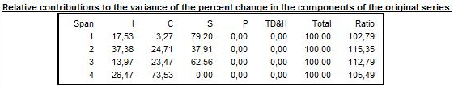
Average differences with regard to sign and standard deviation over indicated span
When an additive decomposition is used, Table F2C presents the average and standard deviation of changes calculated for each time lag \(d\), taking into consideration the sign of the changes of the raw series and its components. In case of a multiplicative decomposition the respective table shows the average percent differences and related standard deviations.
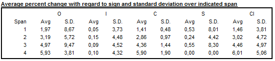
Average duration of run
Average duration of run is an average number of consecutive monthly (or quarterly) changes in the same direction (no change is counted as a change in the same direction as the preceding change). JDemetra+ displays this indicator for the seasonally adjusted series, for the trend and for the irregular component.
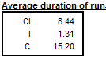
I/C ratio over indicated span and global
The \(\frac{I}{C}\) ratios for each value of time lag \(d\), presented in Table F2E, are computed on a basis of the data in Table F2A. Global IC is displayed below the table
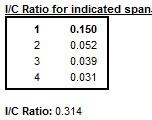
Relative contribution to the stationary part of the variance in the original series
The relative contribution of components to the variance of the stationary part of the original series is calculated for the irregular component (\(I\)), trend made stationary (\(C\)), seasonal component (\(S\)) and calendar effects (TD&H).
The trend is made stationary by by extracting a linear trend from the trend component presented in Table D12.
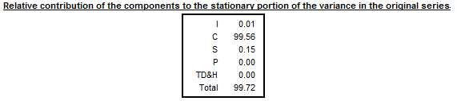
Autocorrelations in the irregular
The last table shows the autocorrelogram of the irregular component from Table D13. In the case of multiplicative decomposition it is calculated for time lags between 1 and the number of periods per year +2 using the formula:
\[ \text{Corr}_{k}I = \frac{\sum_{t = k + 1}^{N}{(I_{t} - 1)(I_{t - k} - 1)}}{\sum_{t = 1}^{N}{(I_{t} - 1)}^{2}} \]
where \(N\) is number of observations in the time series and \(k\) the lag.
For the additive decomposition the formula is:
\[ Corr_{k}I_{t} = \frac{\sum_{t = k + 1}^{N}{(I_{t} \times I_{t - k})}}{\sum_{t = 1}^{N}{(I_{t})}^{2}} \]
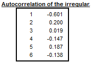
Heteroskedasticity
A Cochran test on equal variances within each period is performed in the extreme value detection procedure to check if the irregular component is heteroskedastic. In this procedure the standard errors of the irregular component are used for an identification of extreme values. If the null hypothesis (for all the periods (months, quarters) the variances of the irregular component are identical) is rejected, the standard errors will be computed separately for each period. This will happen only if in the option Calendarsigma=signif has been selected.
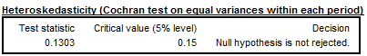
Moving seasonality ratios (MSR)
For each \(i^{\text{th}}\) month we will be looking at the mean annual changes for each component by calculating:
\[ {\overline{S}}_{i} = \frac{1}{N_{i} - 1}\sum_{t = 2}^{N_{i}}|S_{i,t} - S_{i,t - 1}| \]
and
\[ {\overline{I}}_{i} = \frac{1}{N_{i} - 1}\sum_{t = 2}^{N_{i}}| I_{i,t} - I_{i,t - 1}| \]
where \(N_{i}\) refers to the number of months \(\text{i}\) in the data, and the moving seasonality ratio of month \(i\):
\[ MSR_{i} = \frac{\overline{I}_{i}}{\overline{S}_{i}} \]
The Moving Seasonality Ratio (MSR) is used to measure the amount of noise in the Seasonal-Irregular component. By studying these values, the user can select for each period the seasonal filter that is the most suitable given the noisiness of the series.
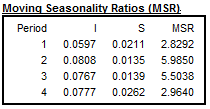
Filter length choice
Trend estimation with Henderson Moving average
In iteration B (Table B7), iteration C (Table C7) and iteration D (Table D7 and Table D12) the trend component is extracted from an estimate of the seasonally adjusted series using Henderson moving averages.
The algorithm chooses between different filter lengths automatically according to the \(I/C\) ratio, the user can modify this choice (first step is computed with \(H_{13}\))

Seasonality extraction filters
In iteration D, Table D10 shows an estimate of the seasonal factors implemented on the basis of the modified SI (Seasonal: Irregular) factors estimated in Tables D4 and D9bis. This component will have to be smoothed to estimate the seasonal component; depending on the importance of the irregular in the SI component
Step 1: Estimating the irregular and seasonal components
An estimate of the seasonal component is obtained by smoothing, month by month and therefore column by column, Table D9bis using a simple 7-term moving average, i.e. of coefficients \(\frac{1}{7} \left\{1,\ 1,\ 1,\ 1,\ 1,\ 1,\ 1\right\}\). In order not to lose three points at the beginning and end of each column, all columns are completed as follows. Let us assume that the column that corresponds to the month is composed of \(N\) values \(\left\{ x_{1},\ x_{2},\ x_{3},\ \ldots x_{N - 1},\ x_{N} \right\}\). It will be transformed into a series \(\left\{ {x_{- 2},x_{- 1}{,x}_{0},x}_{1},\ x_{2},\ x_{3},\ \ldots x_{N - 1},\ x_{N},x_{N + 1},\ x_{N + 1},\ x_{N + 2},\ x_{N + 3} \right\}\) with \(x_{- 2} = x_{- 1} = x_{0} = \frac{x_{1} + x_{2} + x_{3}}{3}\) and \(x_{N + 1} = x_{N + 2} = x_{N + 3} = \frac{x_{N} + x_{N - 1} + x_{N - 2}}{3}\). We then have the required estimates: \(S = M_{7}(D9bis)\) and \(I = D9bis - S\).
Step 2: Calculating the Moving Seasonality Ratios
For each \(i^{\text{th}}\) month the mean annual changes for each component is obtained by calculating
\[ {\overline{S}}_{i} = \frac{1}{N_{i} - 1}\sum_{t = 2}^{N_{i}}\left| S_{i,t} - S_{i,t - 1} \right| \]
and
\[ {\overline{I}}_{i} = \frac{1}{N_{i} - 1}\sum_{t = 2}^{N_{i}}\left| I_{i,t} - I_{i,t - 1} \right| \]
where \(N_{i}\) refers to the number of months \(\text{i}\)in the data, and the moving seasonality ratio of month \(i\):
\[ MSR_{i} = \frac{\ {\overline{I}}_{i}}{ {\overline{S}}_{i}} \]
These ratios are presented in Detailed Quality Measures
Step 3: Calculating the overall Moving Seasonality Ratio
The overall Moving Seasonality Ratio is calculated as follows:
\[ \text{MSR}_{i} = \frac{\sum_{i}^{}{N_{i}\ }\ {\overline{I}}_{i}}{\sum_{i}^{}N_{i}{\overline{S}}_{i}} \]
Step 4: Selecting a moving average and estimating the seasonal
component
Depending on the value of the ratio, the program automatically selects a moving average that is applied, column by column (i.e. month by month) to the Seasonal/Irregular component in Table D8 modified, for extreme values, using values in Table D9.
The default selection procedure of a moving average is based on the Moving Seasonality Ratio in the following way:
If this ratio occurs within zone A (MSR < 2.5), a \(3 \times 3\) moving average is used; if it occurs within zone C (3.5 < MSR < 5.5), a \(3 \times 5\) moving average is selected; if it occurs within zone E (MSR 6.5), a \(3 \times 9\) moving average is used;
If the MSR occurs within zone B or D, one year of observations is removed from the end of the series, and the MSR is recalculated. If the ratio again occurs within zones B or D, we start over again, removing a maximum of five years of observations. If this does not work, i.e. if we are again within zones B or D, a \(3 \times 5\) moving average is selected.
The chosen symmetric moving average corresponds, as the case may be 5 (\(3 \times 3\)), 7 (\(3 \times 5\)) or 11 (\(3 \times 9\) \(3 \times 9\)) terms, and therefore does not provide an estimate for the values of seasonal factors in the first 2 (or 3 or 5) and the last 2 (or 3 or 5) years. These are then calculated using associated asymmetric moving averages.
Extreme values: identification and replacement
Though it is recommended rely on the pre-adjustment stage to correct for outliers (transparent method with explicit modelling), X11 has its own (historical) module for identification and treatment of extreme values based on a comparison between the actual and the theoretical value of \(I\).
Stages B and C aim only at correcting for extreme values and contain several iterations of the following steps.
If the irregular is heteroskedastic the standard deviations used for identifying outliers will be computed separately period by period or for distinct groups of several periods.
Step 1: \(I\) is estimated once \(S\) has been extracted from \(S+I\)
for each year the standard deviation \(\sigma\) is computed on the 5 neighbouring years
\(I\) has a theoretical value \(m\), for multiplicative model \(m=1\), \(m=0\) for an additive model
for a given year \(y\): any point such as \(\lvert I_t - m\rvert >2,5 \sigma_y\) is considered as an extreme value and suppressed….
…all the yearly sigmas (\(\sigma_y\)) are computed without those points (more robust sigmas )
Step 2: The distance \(\lvert I_t - m\rvert\) is computed for each point and evaluated with \(\sigma_{y}\) as a benchmark, a weight \(w_t\) is then assigned to each point, 3 cases:
- value unchanged
\[ \lvert I_t - m\rvert <1.5 \sigma_y \Rightarrow w_t=1 \]
- value downsized
\[ 1,5 \sigma_y<\lvert I_t - m\rvert <2,5 \sigma_y \Rightarrow w_t=\frac{2.5 \sigma_y -\lvert I_t - m\rvert}{2.5 \sigma_y-1.5 \sigma_y} \]
- value removed and replaced
\[ \lvert I_t - m\rvert >2,5 \sigma_y \Rightarrow w_t=0 \]
Step3:
Using this weights, a new value of \(S+I\) will be computed:
if \(w_{t}=1\), \(S+I\) remains unchanged for point {t}
if \(w_{t}<1\) then the new value of \(S+I\) will be an average of \(w_{t}*(S+I)_{t}\) and the values of \((S+I)\) of the two closest neighbours in the future and in the past with \(w=1\)